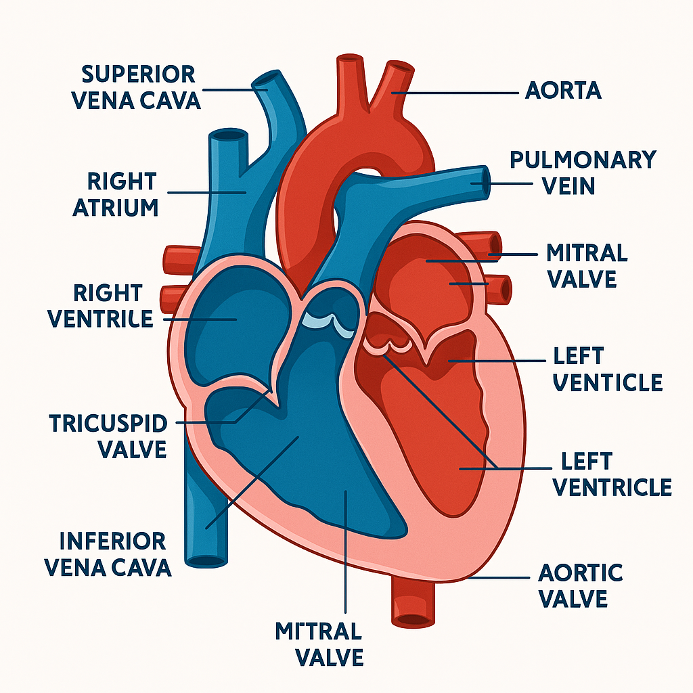

心臟構造與功能

主要部位與功能：
- 主動脈：輸送含氧血液至全身
- 上腔靜脈 / 下腔靜脈：回收身體血液進入心臟
- 右心房：接收回流血液
- 右心室：將缺氧血液送往肺部
- 左心房：接收肺部含氧血液
- 左心室：輸送含氧血液到全身
- 心臟瓣膜（如三尖瓣、二尖瓣、主動脈瓣、肺動脈瓣）：防止血液逆流
說明：
心臟是血液循環的核心，藉由規律收縮與舒張，維持全身組織氧氣及養分供應。
不同腔室與瓣膜協作，確保血液單向流動。
English labels:
Superior vena cava, Right atrium, Right ventricle, Tricuspid valve, Inferior vena cava, Aorta,
Pulmonary vein, Mitral valve, Left ventricle, Aortic valve
Superior vena cava, Right atrium, Right ventricle, Tricuspid valve, Inferior vena cava, Aorta,
Pulmonary vein, Mitral valve, Left ventricle, Aortic valve
肺部構造與功能

主要結構：
- 氣管（Trachea）：空氣進入肺部的管道
- 左右肺（Left/Right lung）：氧氣吸收與二氧化碳排出
- 肺泡（Alveoli）：進行氣體交換的微小氣囊
說明：
肺部是呼吸系統的主要器官，當空氣進入氣管，經由分支進入左右肺，肺泡將氧氣帶入血液，二氧化碳隨呼氣排出。肺與心臟協同，確保細胞獲得氧氣、排除廢氣。
English labels:
Trachea, Right lung, Left lung, Apex, Alveoli, Heart, Oxygen, Carbon Dioxide
Trachea, Right lung, Left lung, Apex, Alveoli, Heart, Oxygen, Carbon Dioxide